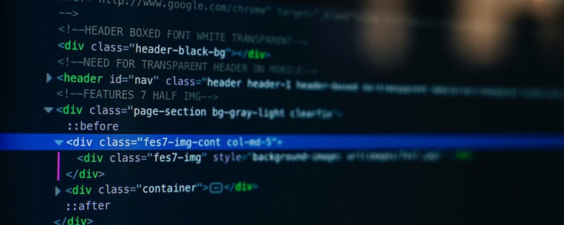

All modern websites and web applications are built using three fundamental technologies: HTML, CSS and JavaScript. These are the languages of the web.
In this post, let's focus on HTML. We will learn what HTML is all about, and why you too should learn it.
HTML stands for HyperText Markup Language. It's a markup language that web developers use to structure and describe the content of a webpage (not a programming language).
HTML consists of elements that describe different types of content: paragraphs, links, headings, images, video, etc. Web browsers understand HTML and render HTML code as websites.
In HTML, each element is made up of 3 parts:
You can learn more at MDN Web Docs.
There are countless reasons for learning the fundamental language of the web. Here are 5 of them:
Hopefully you learned something new here. See you next time!